유통관리사-2급 (2016-04-10 기출문제)
1과목: 유통물류일반
1. 다음 내용을 토대로 하여 경제적 주문량(EOQ)을 구하면? (단, 1년은 52주로 적용하고 EOQ 산출값은 소수점 첫째자리에서 내림한다.)
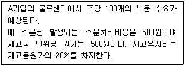
- 약 228개
- 약 160개
- 약 158개
- 약 42개
- 약 68개
(정답률: 45%)

2. “경쟁은 시장에서, 물류는 공동으로”라는 물류공동화의 내용으로 옳지 않은 것은?
- 독자적으로 수송하던 기업들의 운송물량이 적어 수송 및 배송 효율성이 떨어짐에 따라 이를 개선하기 위해 대두된 개념이다.
- 현재의 교통혼잡, 주차문제, 인력난 등으로 인해 공동수송 및 공동배송을 모색하게 되었다.
- 성공적인 수배송 공동화를 위하여 업체마다 상품의 포장에 따른 포장 규격 다양화가 적극 도입되어야 한다.
- 제조업자, 도매상, 소매상들이 주체가 되어 실시되는 경우와 수송업자가 주체가 되어 실시되는 유형으로 구분할 수 있다.
- 공동수배송의 장점에는 물류비용의 절감, 연료비 절감 및 환경에 대한 악영향 감소 등이 있다.
(정답률: 67%)
3. 아래 타이어에 대한 판매 자료를 토대로 4기간 단순이동 평균법을 적용했을 때 10월의 수요예측치는 얼마인가?
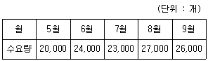
- 22,000개
- 24,000개
- 25,000개
- 26,000개
- 27,000개
(정답률: 61%)
4. 부품이나 완제품의 조달에서 시작하여 완제품의 판매에 이르기까지의 모든 과정에서 발생하는 물류기능의 전체 혹은 일부를 전문 물류업체가 화주업체로부터 위탁을 받아 수행하는 물류활동을 무엇이라고 하는가?
- 회수 물류
- 통합적 로지스틱스
- 상적 물류
- 제3자 물류
- 조달 물류
(정답률: 74%)
5. 다음 사례의 A의류업체가 실행한 SCM 기법은 무엇인가?
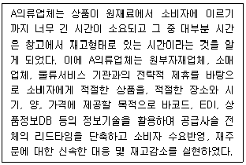
- ERP(Enterprise Resource Planning)
- QR(Quick Response)
- Lean logistics
- ECR(Efficient Consumer Response)
- JIT(Just In Time)
(정답률: 72%)
6. 경로커버리지 유형 중 배타적 유통(exclusive channel)에 대한 설명으로 가장 옳지 않은 것은?
- 극히 소수의 소매점포에서만 자사 제품을 취급하도록 하는 것이다.
- 브랜드 충성도가 매우 높은 제품을 생산하는 제조업체에 의해 채택되는 경향을 보인다.
- 제조업체는 소매점포에 대한 통제력을 강화시킴으로써 자사 브랜드 이미지를 자사 전략에 맞게 유지할 수 있다.
- 주류제조업체 영업사원들이 중소슈퍼, 식당, 주점 등에게 혹은 제약업체의 영업사원이 약국을 대상으로 영업하는 형태가 해당된다.
- 소비자들은 브랜드 충성도가 높은 브랜드를 구매하기 위해 기꺼이 많은 노력을 기울이기 때문에 적은 점포수를 가지고도 운영이 가능하다.
(정답률: 71%)
7. 소비자 기본법에서 규정하는 사업자의 책무 사항으로 옳지 않은 것은?
- 사업자는 스스로의 권익을 증진하기 위하여 필요한 지식과 정보를 습득하도록 노력하여야 한다.
- 사업자는 물품 등을 공급함에 있어서 소비자의 합리적인 선택이나 이익을 침해할 우려가 있는 거래조건이나 거래방법을 사용하여서는 아니 된다.
- 사업자는 소비자에게 물품 등에 대한 정보를 성실하고 정확하게 제공하여야 한다.
- 사업자는 소비자의 개인정보가 분실·도난·누출·변조 또는 훼손되지 아니하도록 그 개인정보를 성실하게 취급하여야 한다.
- 사업자는 물품 등의 하자로 인한 소비자의 불만이나 피해를 해결하거나 보상하여야 하며, 채무불이행 등으로 인한 소비자의 손해를 배상하여야 한다.
(정답률: 71%)
8. 소수의 품목이 전체 매출의 대부분을 차지하고 있기 때문에 그런 소수 품목을 철저히 관리하는 재고관리기법은?
- 확률적 재고관리기법
- 효율적 재고관리기법
- 경제적 주문량관리기법
- ABC 재고관리기법
- 상위 재고관리기법
(정답률: 67%)
9. 리차드 해크맨 (J. Richard Hackman)과 그레그 올드햄(Greg R. Oldham)은 핵심직무특성을 5가지로 분류하였다. 이에 해당하지 않는 것은?
- 과업 책임성(task responsibility)
- 자율성(autonomy)
- 과업 중요성(task significance)
- 과업 정체성(task identity)
- 기술 다양성(skill variety)
(정답률: 29%)
10. 마진과 회전율에 따른 소매상 포지셔닝으로 적절한 것은?
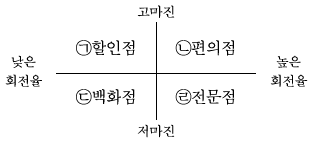
- ㉠
- ㉡
- ㉢
- ㉣
- ㉠, ㉣
(정답률: 72%)
11. 제조기업이 유통부문에 대한 소유권과 통제력을 갖는 것을 무엇이라고 하는가?
- 전방통합
- 후방통합
- 아웃소싱
- 다각화
- 차별화
(정답률: 70%)
12. 사회문화적 측면의 변화에 따른 유통환경에 대한 설명으로 가장 옳지 않은 것은?
- 정보기술의 발전으로 소비자의 목소리가 커져서 프로슈머가 등장하였다.
- 생활방식의 변화로 대용량 포장이 각광받고 있다.
- 건강에 대한 관심이 높아져서 친환경 농산물 및 관련 제품이 인기이다.
- 제품의 질과 가치를 동시에 추구하는 합리적인 소비문화가 등장하였다.
- 여성의 사회적, 경제적 활동 증가로 즉석식품과 편의점, 배달서비스가 발전하였다.
(정답률: 72%)
13. 아웃소싱 추진 시 고려해야 할 사항으로 가장 옳지 않은 것은?
- 경로구성원의 가치창출을 위해서라면 모든 각각의 기능에 대한 아웃소싱가능성을 고려할 수 있다.
- 경쟁우위에 있는 분야와 열위에 있는 분야를 주관적인 분석을 통해 알아내야 한다.
- 아웃소싱하는 기능과 기업이 직접 수행하는 기능이 가치창출의 관점에서 효율적, 효과적인 통합이 중요하다.
- 아웃소싱파트너와의 긴밀한 협력이 필수적이다.
- 열위에 있는 분야를 어떻게 아웃소싱할지 고민해야 한다.
(정답률: 57%)
14. 전략 유형을 시장대응전략과 경쟁우위전략으로 구분할 때 시장대응전략만으로 옳게 묶인 것은?
- 제품수명주기전략, 포트폴리오전략
- 원가우위전략, 포트폴리오전략
- 차별화전략, 집중화전략
- 제품/시장믹스전략, 차별화전략
- 제품수명주기전략, 집중화전략
(정답률: 49%)
15. 수직적 통합의 문제점으로 옳지 않은 것은?
- 분업에 따른 전문화의 이점을 누리기 힘들어질 수도 있다.
- 경우에 따라 비용구조가 증가하기도 한다.
- 조직의 비대화를 가져와 관료화의 문제를 겪기 쉽다.
- 유통 경로 구성원에 대한 통제가 어렵다.
- 유연성이 줄어들 수 있다.
(정답률: 68%)
16. 다음은 유통산업발전법에서 정의한 체인사업의 한 유형이다. 이에 해당하는 체인사업의 유형은?
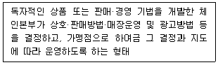
- 프랜차이즈형 체인사업
- 임의가맹형 체인사업
- 직영점형 체인사업
- 조합형 체인사업
- 카르텔형 체인사업
(정답률: 75%)
17. 최근 물류의 중요성이 증가하는 이유로 옳지 않은 것은?
- 경쟁전략의 한 수단으로서 비교우위를 갖기 위한 전략적 필요성
- 긴급 배송 의뢰의 증가
- 생산부문 생산성 증가의 정체
- 소품종 대량생산의 증가
- 고객니즈의 다양화
(정답률: 55%)
18. 다음에서 설명하고 있는 수직적 유통시스템(VMS)은?
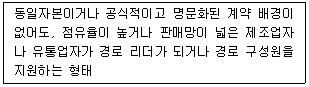
- 기업형 VMS
- 리더형 VMS
- 자유형 VMS
- 계약형 VMS
- 관리형 VMS
(정답률: 40%)
19. 종업원 평가와 피드백에 대한 설명으로 가장 옳지 않은 것은?
- 평가 자체는 종업원의 직속 관리자가 하는 것보다 인력관리부서의 직원이 담당하는 것이 합리적이다.
- 공식적인 평가와 비공식적인 평가를 함께 사용하는 것이 좋다.
- 종업원들은 평가 방식에 대해 알고 있을 때 진정한 의미의 평가라 여긴다.
- 평가를 통한 피드백은 종업원의 실력을 향상시킬 수 있다.
- 편견을 갖고 판단하지 않도록 평가 오류를 줄이기 위해 노력해야한다.
(정답률: 50%)
20. 물류에 대한 내용으로 옳지 않은 것은?
- 수송비는 제품의 밀도, 가치, 부패가능성, 충격에의 민감도 등에 영향을 받는다.
- 선적되는 제품양이 많을수록 주어진 거리내의 단위당 운송비는 낮아진다.
- 수송거리는 운송비에 영향을 미치는 요인으로 수송거리가 길수록 단위거리당 수송비는 낮아진다.
- 재고의 지리적 분산정도가 낮기를 원하는 기업은 소수의 대형배송센터를 건설하고 각 배송센터에서 취급되는 품목들의 수와 양을 확대할 것이다.
- 수송비와 재고비는 비례관계이기 때문에 이들 비용의 합을 고려한 비용을 최소화하며 고객서비스 향상을 충족하는 것은 중요하다.
(정답률: 48%)
21. 기업의 자금조달에 대한 설명으로 옳지 않은 것은?
- 엔젤 : 신설 벤처기업의 기업화 초기단계에서 필요한 자금을 지원하고 경영을 지도하여 주는 개인투자자를 말한다.
- 팩토링 : 기업과 기업 사이에서 발생된 매출채권을 매입하는 것이다.
- 할부금융 : 내구재를 할부 구매한 소비자들에 대한 채권을 매입하는 것이다.
- 단기 자금조달 : 신주발행은 주주들이 실제로 자금을 납입하는 유상증자와 자금을 납입하지 않는 무상증자로 구분되며, 이는 단기적 자금조달 방법이다.
- 차입 : 은행에서의 장기차입은 대체로 시설투자를 목적으로 차입하며, 단기차입은 운영자금용으로 차입한다.
(정답률: 39%)
22. 다음 글상자에서 설명하고 있는 이것은 무엇인가?
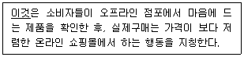
- 모바일 상거래(m-commerce)
- online to offline(O2O)
- 멀티 채널 쇼핑(Multi-channel shopping)
- 직접 구매
- 쇼 루밍(show rooming)
(정답률: 68%)
23. 다른 할인점에 비해 회원제 창고형 할인점(membership wholesale club : MWC)이 갖는 특징으로 가장 옳은 것은?
- 고객서비스 수준은 최소로 제공한다.
- 저비용의 소규모 소매시설이라 볼 수 있다.
- 상품진열은 주로 수평의 공간위주로 활용한다.
- 보유재고를 최소한으로 한다.
- 상품 하나하나마다 가격표를 각각 부착한다.
(정답률: 62%)
24. 운송수단에 대한 설명으로 가장 옳지 않은 것은?
- 파이프라인의 경우 비교적 비용이 저렴하고 특정 형태의 상품만을 수송하는데 유리하다.
- 항공수송은 부피가 작고 부패성이 높은 고가의 상품인 경우 유용하다.
- 해상운송과 트럭을 함께 사용하는 수송방식을 피기백(piggy back)방식이라 한다.
- 버디백(birdy back)방식은 트럭과 항공운송을 결합한 방식이다.
- 트럭은 일반적으로 소량의 상품을 단거리 수송하는데 효과적이다.
(정답률: 57%)
25. 리더십을 과업지향적인 유형과 관계지향적인 유형으로 구분하여, 리더가 어떤 유형의 리더십을 갖고 있는지를 측정하기 위해 최소선호동료 설문지를 개발한 상황이론의 대표적인 학자는?
- 포터(M. Porter)
- 맥클리랜드(D. McClelland)
- 앨더퍼(C. Alderfer)
- 브룸(V. H. Vroom)
- 피들러(F. E. Fiedler)
(정답률: 44%)
2과목: 상권분석
26. 어떤 소비자가 A, B, C 세 개의 점포를 고려하고 있고, 그 소비자가 가지는 점포 A, B, C의 효용이 각각 8, 6, 5라고 가정하자. Luce의 선택공리를 적용할 때, 이 소비자가 점포 A를 선택할 확률은 얼마인가?
- 0.3
- 0.8
- 0.19
- 0.03
- 0.42
(정답률: 54%)
27. Y 아파트 단지 주변에 X상점가가 있고 주위에 A백화점이 진출하였다고 가정할 때, 수정 허프모델을 사용하여 Y아파트 고객이 A백화점에 내점하리라 예상되는 고객수는 얼마인가? (단, 거리와 점포면적에 대한 모수는 각각 -2와 1임)
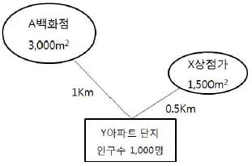
- 약 570명
- 약 330명
- 약 450명
- 약 280명
- 약 500명
(정답률: 38%)
28. 상권분석에 이용할 수 있는 회귀분석 모형에 관한 설명으로 가장 옳지 않은 것은?
- 소매점포의 성과에 영향을 미치는 요소들을 파악하는데 도움이 된다.
- 모형에 포함되는 독립변수들은 서로 관련성이 높을수록 좋다.
- 점포성과에 영향을 미치는 영향변수에는 상권내 경쟁수준이 포함될 수 있다.
- 점포성과에 영향을 미치는 영향변수에는 상권내 소비자들의 특성이 포함될 수 있다.
- 회귀분석에서는 표본의 수가 충분하게 확보되어야 한다.
(정답률: 66%)
29. 「유통산업발전법」 에서는 대형점포 등과 중소유통업의 상생발전을 위하여 필요하다고 인정하는 경우 대형마트 등에 대한 영업시간 제한이나 의무휴업일 지정을 규정하고 있다. 이에 대한 내용으로 옳지 않은 것은?
- 시장·군수·구청장 등은 오전 0시부터 오전 10시까지의 범위에서 영업시간을 제한할 수 있다.
- 시장·군수·구청장 등은 매월 이틀을 의무휴업일로 지정하여야 한다.
- 동일 상권내에 전통시장이 존재하지 않는 경우에는 위의 내용이 적용되지 아니한다.
- 영업시간 제한 및 의무휴업일 지정에 필요한 사항은 해당 지방자치단체의 조례로 정한다.
- 의무휴업일은 공휴일 중에서 지정하되, 이해당사자와 합의를 거쳐 공휴일이 아닌 날을 의무휴업일로 지정할 수 있다.
(정답률: 57%)
30. Christaller 의 중심지 이론에서 제시하는 내용으로 가장 옳지 않은 것은?
- 생산자와 소비자 모두 완전한 지식을 갖는 합리적 경제인으로 본다.
- 하나의 중심지가 있을 때 고려하는 상권은 원형의 형태로 구성된다.
- 각 지역에서 중심지까지 이동하는 노력의 정도는 거리에 비례한다.
- 주민의 구매력과 소비형태는 동질적인 것으로 가정한다.
- 이동시간을 기준으로 고려하면 양쪽 중심지까지 무차별적인 지역이 없어지게 된다.
(정답률: 34%)
31. 박스 안의 내용은 어떤 소매업태의 입지요건에 가장 합당하다고 할 수 있는가?
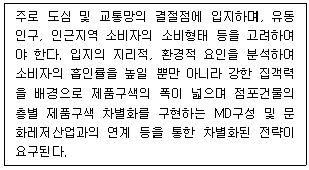
- 백화점
- 할인점
- 패션 전문점
- 아울렛몰
- 카테고리킬러
(정답률: 60%)
32. 중심상업지역(CBD : Central Business District)의 입지특성에 대한 설명으로 옳지 않은 것은?
- 소도시나 대도시의 전통적인 도심지역을 말한다.
- 대중교통의 중심이며, 도보통행량이 매우 적다.
- 상업활동으로도 많은 사람을 유인하지만 출퇴근을 위해서도 이곳을 통과하는 사람이 많다.
- 주차문제, 교통혼잡 등이 교외 쇼핑객들의 진입을 방해하기도 한다.
- 백화점, 전문점, 은행 등이 밀집되어 있다.
(정답률: 69%)
33. 동선(動線)에 대한 내용으로 옳지 않은 것은?
- 동선이란 고객들의 이동궤적을 의미하는데 자석(customer generator)과 자석을 연결하는 선으로 나타나기도 한다.
- 경제적 사정으로 많은 자금이 필요한 주동선에 입지하기 어려운 점포는 부동선(副動線)을 중시한다.
- 접근동선이란 동선으로 접근할 수 있는 동선을 말한다.
- 복수의 자석이 있는 경우의 동선을 부동선(副動線)이라 한다.
- 주동선이란 자석과 자석을 잇는 가장 기본이 되는 선을 말한다.
(정답률: 63%)
34. 업종유형과 상권과의 관계에 대한 내용으로 옳지 않은 것은?
- 선매품을 취급하는 소매점포는 보다 상위의 소매중심지나 상점가에 입지하여 넓은 범위의 상권을 가지는 것이 좋다.
- 동일 업종이라 하더라도 점포의 규모나 품목의 구성에 따라 상권의 범위가 달라진다.
- 전문품을 취급하는 점포의 경우 잠재고객이 지역적으로 밀집되어 있으므로 상권의 밀도는 높으나, 범위는 좁은 특성을 갖고 있다.
- 상품구성의 폭과 깊이를 크게 하여 다목적구매와 비교구매를 가능하게 하는 것도 상권의 범위를 넓히는 요인이 된다.
- 생필품의 경우, 소비자는 구매거리가 짧고 편리한 장소에서 구매하려 하기 때문에 이런 상품을 취급하는 업태는 주택지에 근접한 입지를 취하는 것이 좋다.
(정답률: 64%)
35. 출점을 위한 투자의 적절성을 평가하는 다양한 기법들이 개발되어 있다. 박스 안에는 투자의 적절성 평가 기법들이 갖추어야 할 요건들이 제시되어 있다. 다음 중 박스 안에 제시된 모든 요건을 충족하는 평가 기법은?
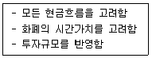
- 회수기간법
- 할인 회수기간법
- 순현가법
- 회계적 이익률법
- 내부수익률법
(정답률: 41%)
36. 고객을 유인하고 쇼핑센터를 활성화하기 위해 쇼핑센터 개발자는 하나 혹은 복수의 대형소매점을 앵커스토어(anchor store)로 입점시킨다. 쇼핑센터의 유형별로 적합한 앵커스토어의 유형을 연결한 것으로서 가장 옳지 않은 것은?
- 파워센터형 쇼핑센터 — 회원제 창고형 소매점
- 지역센터형 쇼핑몰 — 할인형 백화점
- 초광역센터형 쇼핑몰 — 완전구색형 백화점
- 근린형 쇼핑센터 — 의류전문점
- 테마/페스티벌센터형 쇼핑몰 — 유명한 식당
(정답률: 54%)
37. 점포와의 거리를 기준으로 상권구성을 구분할 때 1차상권, 2차상권, 3차상권으로 구분한다. 이에 대한 내용으로 옳지 않은 것은?
- 1차상권은 경쟁점포들과의 상권중복도가 낮다.
- 1차상권은 2, 3차 상권에 비해 상대적으로 소비자의 밀도가 높다.
- 2차상권은 1차상권에 비해 소비자의 내점빈도가 낮다.
- 3차상권은 소비수요의 흡인비율이 가장 높은 지역이다.
- 3차상권은 한계상권이라고 부르기도 한다.
(정답률: 60%)
38. 도매상의 입지전략에 대한 설명으로 가장 옳지 않은 것은?
- 영업성과에 대한 입지의 영향은 소매상보다 도매상의 경우가 더 작다.
- 분산도매상은 물류의 편리성을 고려하여 입지를 결정한다.
- 수집도매상의 영업성과에 대한 입지의 영향은 매우 제한적이다.
- 도매상은 보통 소매상보다 임대료가 저렴한 지역에 입지한다.
- 도매상은 보통 최종소비자의 접근성을 고려하여 입지를 결정한다.
(정답률: 66%)
39. 소매점포 입지조건의 평가를 위한 교통통행량 또는 유동인구 조사에 대한 설명으로 옳지 않은 것은?
- 교통통행량 계측시에는 차종을 구별해야 한다.
- 조사일정은 주중, 주말, 휴일 등을 구분해야 한다.
- 조사시간은 영업시간대를 고려하여 설정한다.
- 유동인구수보다 이동목적 파악이 더 중요할 수 있다.
- 퇴근동선보다 출근동선을 중시해야 한다.
(정답률: 65%)
40. 다양한 상권의 유형을 상권별 개념과 특징으로 설명한 것이다. 옳지 않은 것은?
- 부도심상권은 간선도로의 결절점이나 역세권을 중심으로 형성되는 경우가 많으나, 도시전체의 소비자를 유인하지는 못한다.
- 역세권상권은 지하철이나 철도역을 중심으로 형성되며 지상과 지하 부지를 입체적으로 연계하여 고밀도개발이 이루어지는 경우가 많다.
- 근린상권은 점포인근 거주자들을 주요 고객으로 하는 생활밀착형 업종의 점포들이 입지하는 경향이 있다.
- 도심상권은 중심업무지구(CBD)를 포함하며 상권의 범위가 넓고 소비자들의 체류시간이 긴 편이다.
- 아파트상권은 고정고객의 비중이 높아 안정적인 수요확보가 가능하고 외부고객을 유치해 상대적으로 상권 확대가능성이 높다.
(정답률: 64%)
41. 지역시장의 성장가능성이 높은 상황이지만 기존 점포간의 경쟁이 치열하여 매출 쟁탈을 위한 적극적인 판매노력이 요구되는 상황은?
- 소매포화지수(IRS)와 시장성장잠재력지수(MEP)가 모두 높은 경우
- 소매포화지수(IRS)는 높지만 시장성장잠재력지수(MEP)가 낮은 경우
- 소매포화지수(IRS)는 낮지만 시장성장잠재력지수(MEP)가 높은 경우
- 소매포화지수(IRS)와 시장성장잠재력지수(MEP)가 모두 낮은 경우
- 소매포화지수(IRS)와 시장성장잠재력지수(MEP)로 알 수 없다.
(정답률: 53%)
42. 대형 소매점포가 어떤 지역에 신규출점을 할 경우 입지분석의 일반적 과정은?
- 부지분석(site analysis) - 지구분석(area analysis) - 지역분석(regional analysis)
- 부지분석(site analysis) - 지역분석(regional analysis) - 지구분석(area analysis)
- 지역분석(regional analysis) - 지구분석(area analysis) - 부지분석(site analysis)
- 지역분석(regional analysis) - 부지분석(site analysis) - 지구분석(area analysis)
- 지구분석(area analysis) - 지역분석(regional analysis) - 부지분석(site analysis)
(정답률: 53%)
43. 컴퓨터를 이용한 지도작성(mapping)체계와 데이터베이스 관리시스템의 결합을 통해 공간데이터의 수집, 생성, 저장, 분석, 검색, 표현 등의 다양한 기능을 기반으로 상권분석에 활용되고 있는 것은?
- AI
- POS
- EDI
- GIS
- DBMS
(정답률: 69%)
44. 상권분석 기법들에 관련한 설명으로 옳지 않은 것은?
- 중심지이론에 의하면 최대도달거리보다 최소수요충족 거리가 큰 것이 바람직하다.
- 체크리스트법과 유추법은 기술적 방법(descriptive method)에 속한다.
- CST map은 점포간의 상권의 잠식상태를 표현하는데 쓰일 수 있다.
- 확률적 점포선택 모델에서 특정점포의 효용은 점포의 매력도를 나타낸다.
- Reilly의 소매중력법칙에서 실제거리와 소비자가 지각하는 거리는 일치하지 않을 수 있다.
(정답률: 50%)
45. 소매점의 상권범위나 상권형태와 관련한 일반적 현상을 설명한 것으로 옳지 않은 것은?
- 동일한 위치에서 입지조건의 변화가 없고 점포의 전략적 변화가 없어도 상권의 범위는 유동적으로 변화하기 마련이다.
- 점포의 규모가 비슷하더라도 업종이나 업태에 따라 점포들의 상권범위는 차이를 보인다.
- 상권의 형태는 점포를 중심으로 일정거리 이내를 포함하는 원형으로만 나타난다.
- 점포면적과 상품구색이 유사할 때에도 판촉활동이나 광고활동의 차이에 따라 점포들간의 상권범위가 달라진다.
- 동일한 지역시장에 입지한 경우에도 점포의 규모에 따라 개별 점포들간의 상권범위에는 차이가 있다.
(정답률: 64%)
3과목: 유통마케팅
46. POS(Point of Sale) 시스템으로 수집되는 데이터로 옳지 않은 것은?
- 제품 선호도
- 매출액
- 지불방법
- 점별 판매량
- 판매된 시간
(정답률: 54%)
47. 각 경로대안의 총마진에서 직접제품비용을 뺀 제품수익성을 평가하여 직접제품이익이 가장 높은 경로 대안을 선택하는 방법을 직접제품 이익(Direct Product Profit)기법이라 한다. 직접제품비용에 해당하지 않는 것은?
- 재고비
- 광고비
- 매장노무비
- 수송비
- 매대점유비
(정답률: 54%)
48. 머천다이징에 대한 설명으로 가장 옳지 않은 것은?
- 유통활동의 객체가 될 소비자의 수요에 적응할 수 있는 상품을 공급하고자 하는 중간상의 활동을 의미한다.
- 구매자 시장 하에서 소비자의 니즈에 부응하여 제조업체가 적극 개입하여 상품의 구색을 맞추는 과정이다.
- 머천다이징은 매장에 방문하는 고객이 찾을만한 제품을 선별하여 판매하는 것이다.
- 머천다이징 결과로 소비자는 원하는 상품을, 원하는 가격에, 원하는 수량을, 원하는 시기에, 원하는 장소에서 구입할 수 있게 된다.
- 상품계획수립, 상품구매활동, 가격설정활동, 재고관리, 판매관리도 머천다이징에 포함될 수 있다.
(정답률: 42%)
49. 상품구성은 품종, 상품군, 품목을 구성하는 방법에 따라 일반적으로 4가지 형태로 구성할 수 있다. 이에 해당하지 않는 것은?
- 좁고 깊은 구성
- 넓고 깊은 구성
- 무작위 구성
- 좁고 얕은 구성
- 넓고 얕은 구성
(정답률: 71%)
50. 소셜 커머스(social commerce)에 관한 설명으로 옳지 않은 것은?
- 음식점, 커피숍, 공연 등 지역 기반의 서비스 상품에 대한 공동구매로 시작하였다.
- 1, 2위 업체의 경우 소수의 상품을 낮은 가격에 판매할 때 활용하곤 한다.
- 판매자들과의 협상보다는 주로 치열한 가격경쟁을 통해 가격하락을 유도한다.
- 스마트폰을 이용한 소셜 커머스 판매비중의 증가율이 스마트폰을 이용한 오픈마켓보다 높아지는 추세이다.
- 큐레이션 커머스(curation commerce) 형태를 띠고 있다.
(정답률: 47%)
51. 제조업체가 중간상들과의 거래에서 사용하는 가격할인형태로 가장 옳지 않은 것은?
- 현금할인(cash discounts)
- 거래할인(trade discounts)
- 판매촉진지원금(promotional allowances)
- 계절할인(seasonal discounts)
- 손실유도가격할인(loss-leader pricing discounts)
(정답률: 51%)
52. 일반적으로 전체경로 및 개별경로 구성원의 경로 성과를 평가하는 기준으로 옳지 않은 것은?
- 시스템의 효과성(system effectiveness)
- 시스템의 공평성(system equity)
- 시스템의 생산성(system productivity)
- 시스템의 수익성(system profitability)
- 시스템의 유동성(system flexibility)
(정답률: 40%)
53. 서비스의 이질성(heterogeneity)을 해결하기 위한 활동으로 가장 옳은 것은?
- 서비스 제공을 위한 물리적 환경을 강조한다.
- 서비스 제공의 표준절차와 방법을 수립하고 매뉴얼화한다.
- 예약제도를 통해 사전에 수요를 파악하도록 한다.
- 서비스 시스템을 지역적으로 분산시킨다.
- 고객의 요구를 적극 수용하여 서비스 프로세스를 차별화한다.
(정답률: 48%)
54. 소매점의 광고효과를 측정하는 기준의 하나로서, 잠재고객(세대 혹은 개인) 가운데 적어도 1회 이상 광고에 접촉한 고객의 비율을 나타내는 용어는?
- 도달율(reach)
- 어프로치(approach)
- 커버리지(coverage)
- 효과(impact)
- 빈도(frequency)
(정답률: 53%)
55. 상품의 카테고리는 소비자 중심 또는 소매업자 중심으로 분류할 수 있다. 소매업자 중심의 분류 중에서 선도자(flagship) 카테고리에 속하는 상품의 특징을 올바르게 정의한 것은?
- 고매출 - 고마진 상품
- 중매출 - 고마진 상품
- 고매출 - 저마진 상품
- 중매출 - 저마진 상품
- 저매출 - 고마진 상품
(정답률: 60%)
56. 소매경쟁의 유형 중 소매상과 도매상 혹은 소매상과 제조업자 간의 경쟁을 뜻하는 것은?
- 업태내 경쟁(intratype competition)
- 업태간 경쟁(intertype competition)
- 수직적 경쟁(vertical competition)
- 수평적 경쟁(horizontal competition)
- 시스템 경쟁(system competition)
(정답률: 62%)
57. 다음 글상자에서 설명하고 있는 것은?
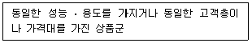
- 상품 구색(product assortment)
- 상품 품목(product item)
- 상품 계열(product line)
- 상품 믹스(product mix)
- 상품 카테고리(product category)
(정답률: 54%)
58. 기업의 비용구조나 수요보다는 경쟁제품의 가격을 중심으로 다소 높게 또는 낮게 가격을 책정하는 방식은?
- 경쟁입찰에 따른 가격결정
- 시장가격에 따른 가격결정
- 비용가산에 따른 가격결정
- 손익분기점 분석에 의한 가격결정
- 이윤중심적 가격결정
(정답률: 45%)
59. 표본추출방법 중 각 표본들이 동일하게 선택될 확률을 가지도록 선정된 표본프레임 안에서 각 표본단위들에 일련번호를 부여한 다음, 난수표를 이용해서 선정된 번호에 따라서 무작위로 추출하는 방법은?
- 층화 표본추출
- 군집 표본추출
- 편의 표본추출
- 단순무작위 표본추출
- 판단 표본추출
(정답률: 58%)
60. 유통마케팅 조사 프로젝트를 조사목적에 따라 분류할 수 있다. 조사 문제와 관련된 마케팅의 현황 및 시장상황(예를 들어 시장잠재력이나 소비자의 특성 등)을 파악하려는 목적으로 실시하는 조사는?
- 탐색적 조사(exploratory research)
- 기술적 조사(descriptive research)
- 인과적 조사(causal research)
- 설문조사(questionnaire research)
- 옴니버스 조사(omnibus research)
(정답률: 23%)
61. 소매점에서 카테고리 캡틴(category captain)을 활용하는 이유로서 가장 옳지 않은 것은?
- 가격설정, 촉진활동 등의 위임을 통한 해당 카테고리 관리의 부담 감소
- 고객에 대한 이해 증진에 협력함으로써 해당 카테고리 전반의 수익 증진
- 재고품절의 방지를 통한 관련된 손해의 회피 및 서비스 수준의 향상
- 해당 카테고리 품목의 여타 납품업체들과의 구매협상 노력을 생략하여 비용 절감
- 해당 카테고리를 구성하는 전체 브랜드들의 균형적 성장을 통한 벤더 관계 개선
(정답률: 38%)
62. 소매가격전략에 대한 설명으로 옳지 않은 것은?
- 상시저가(EDLP)전략은 매일 매일 상품을 저가격에 판매하는 전략이다.
- High/Low전략은 보통 때는 비싸게 팔다가, 할인시 싸게 파는 전략이다.
- 상시저가(EDLP)전략에서는 재고회전율을 높이는 것이 중요한 반면, High/Low전략에서는 높은 수준의 상품품질과 서비스를 제공하는 것이 중요하다.
- 상시저가(EDLP)전략은 매출 확대가 중요한 반면, High/Low전략은 이익률이 중요하다.
- 상시저가(EDLP)전략은 백화점에서 주로 사용하는 반면, High/Low전략은 할인점에서 주로 사용한다.
(정답률: 67%)
63. 판매를 원하는 모든 사업자들에게 개방되어 있는 온라인 시장 혹은 마켓 플레이스(market place)를 무엇이라 하는가?
- 소셜 커머스
- 오픈마켓
- 모바일 쇼핑
- 카탈로그 쇼핑
- 포털
(정답률: 64%)
64. 마케팅전략 수립을 위해 분석해야 하는 마케팅 환경 분석의 구성요소 중 미시적 환경분석에 해당하는 것은?
- 정치적 환경 분석
- 경제적 환경 분석
- 기술적 환경 분석
- 문화적 환경 분석
- 구매자 심리 분석
(정답률: 63%)
65. 고객에 대한 인구통계적 특성, 라이프스타일, 고객이 추구하는 혜택, 구매행동 등의 정보를 포함하는 것으로 고객의 생애가치를 극대화하기 위해 활용되는 시스템은?
- 내부정보 시스템
- 고객정보 시스템
- 마케팅조사 시스템
- 마케팅 인텔리전스 시스템
- 재무회계 시스템
(정답률: 67%)
66. '유통업체가 고객에게 적정 수량의 적정 상품구색을 적시에 제공하는 동시에 자사의 재무적 목표를 달성하려고 노력하는 과정'을 무엇이라고 하는가?
- 카테고리관리(category management)
- 고객관계관리(customer relationship management)
- 상품관리(merchandise management)
- 점포관리(store management)
- 전략적 이익관리(strategic profit management)
(정답률: 36%)
67. 카테고리 수명주기 단계 중 소매점들이 취급하는 상품 카테고리에 포함되는 품목의 다양성이 가장 높은 단계는?
- 도입기
- 성숙기
- 성장기
- 쇠퇴기
- 소멸기
(정답률: 50%)
68. 유통경로구조를 결정하는 요인에 대한 설명으로 옳지 않은 것은?
- 제품이 무겁고 부피가 크면 직접경로가 유리하다.
- 제품의 단위가치가 낮을수록 유통경로는 길어진다.
- 도입단계의 신제품일수록 경로길이는 길어진다.
- 제품이 표준화될수록 경로길이는 길어진다.
- 자사의 재무능력이 좋고, 규모가 클수록 중간상에게 덜 의존하게 된다.
(정답률: 36%)
69. 특정 소매점에서 A제품에 대하여 '가격할인'과 '프리미엄 제공'이라는 2개의 판촉전략을 한달간 실행하였다. 그 기간 동안 카드로 A제품을 구매한 고객을 20대, 30대, 40대, 50대로 분류하여 각 판촉활동의 연령대별 매출액 증감효과 차이를 분석하고자 할 경우, 가장 적합한 분석기법은?
- t-검증
- 회귀분석
- 군집분석
- 분산분석
- 판별분석
(정답률: 27%)
70. 브랜드에 대한 설명으로 옳지 않은 것은?
- 기업 브랜드(corporate brand) : 기업명이 브랜드 역할을 하는 것
- 패밀리 브랜드(family brand) : 여러 가지 종류의 상품에 부착되는 브랜드
- 개별 브랜드(individual brand) : 한 가지 종류의 상품에만 부착되는 브랜드
- 브랜드 수식어(brand modifier) : 브랜드 뒤에 붙는 수식어
- 자체 브랜드(private brand) : 주문자 제조방식이 아닌 제조기업이 자체 제조한 상품에 부착한 브랜드
(정답률: 53%)
4과목: 유통정보
71. 제약조건이론(TOC)에 대한 설명으로 가장 옳지 않은 것은?
- 재고를 '0'으로 실현시키고자 하는 재고관리 기법으로 CRT(Current Reality Tree)를 제시한다.
- 원자재 투입시점을 조정하여 공정내 종속성과 변동성을 관리하는 기법인 DBR(Drum-Buffer-Rope)을 제시한다.
- 능력제약자원이 존재하는 부분이 최대한 100% 가동을 할 수 있도록 공정 속도를 조절하여 관리하는 기법인 DBR(Drum-Buffer-Rope)을 제시한다.
- 기업의 업무에 대한 소통 도구로서 사고프로세스를 정의하고, 5가지 논리 나무 다이어그램을 제시한다.
- 현금 흐름을 투명하게 보여줄 수 있도록 쓰루풋(Throughput) 회계 기법을 제시한다.
(정답률: 38%)
72. CRM(Customer Relationship Management) 에 사용되는 대표적인 요소 기술에 대한 설명이다. 무엇에 대한 설명인가?
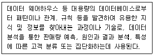
- 데이터 마이닝(Data Mining)
- 데이터 마트(Data Mart)
- OLAP(Online Analytical Processing)
- 데이터 큐브(Data Cube)
- 데이터 무결성(Data Integrity)
(정답률: 67%)
73. 디지털 경제 시대의 특성을 설명한 내용이다. 다음 중 보기와 가장 관련이 높은 것은?
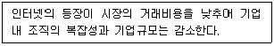
- 길더(Gilder)의 법칙
- 무어(Moore)의 법칙
- 황의 법칙
- 코스(Coase)의 법칙
- 메카프(Metcalf)의 법칙
(정답률: 43%)
74. 유통산업에서의 RFID 도입 활용효과로 가장 옳지 않은 것은?
- 재고절감
- 입출고 리드타임의 단축 및 검수 정확도 향상
- 도난 등 상품 손실 절감
- 상품 개발력 향상
- 반품 및 불량품 추적 및 조회
(정답률: 63%)
75. POS 데이터 활용은 기본적인 보고서만 활용하는 첫 번째 단계로부터 전략적 경쟁무기로 활용하는 최종단계로 구분된다. 다음의 내용 중에서 두 번째 단계인 '상품기획과 매장 효율제고에 활용하는 단계'에 대한 내용으로 가장 옳지 않은 것은?
- 판촉분석
- 선반진열 효율분석
- 매출 손실분석
- 자동수발주 분석
- 재고회전율분석
(정답률: 32%)
76. EPC(Electronic Product Code)의 특성에 대한 설명으로 가장 옳지 않은 것은?
- 위조품 방지기능이 있다.
- 유효기간을 관리할 수 있다.
- 상품그룹별 품목단위 즉, 동일품목까지 식별할 수 있다.
- 상품 추적기능이 있다.
- 상품별 재고관리가 가능하다.
(정답률: 33%)
77. SET(Secure Electronic Transaction) 와 SSL(Secure Socket Layer) 간의 비교 설명으로 가장 옳지 않은 것은?
- SSL은 정보보안 소켓계층으로 신용카드의 정보도용을 방지하기 위하여 개인정보인 카드번호 등을 암호화하여 주는 기술이다.
- SET는 인터넷과 같은 개방 네트워크에서 안전한 카드결제를 지원하기 위하여 개발된 전자결제 프로토콜이다.
- 사용편리성 측면에서 SSL은 암호 프로토콜이 복잡하여 다소 어려운 반면에, SET는 간편하다.
- SSL은 사용자 지불정보가 상점에 노출되나 SET는 상점에 지불정보가 노출되지 않는다.
- 조작가능성 측면에서 SSL은 상점 단독으로 가능하나 SET는 다자간의 협력이 필요하다.
(정답률: 46%)
78. 정보는 특별한 관련성과 목적을 가진 데이터이다. 다음 중 데이터를 정보로 전환하는 데 필요한 다섯 유형의 중요한 활동으로 가장 적합하지 않은 것은?
- 맥락화
- 분류
- 정정
- 대화
- 축약
(정답률: 53%)
79. 효율적인 유통네트워크 디자인을 통해 얻을 수 있는 효과에 대한 설명이다. 가장 적절한 것은?
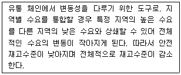
- 리스크 풀링(Risk pooling)효과
- 채찍효과(Bullwhip Effect)
- 수요왜곡현상
- 병목현상
- 포카요케(poka-yoke)현상
(정답률: 46%)
80. 빅데이터의 필요성에 대한 내용으로 가장 옳지 않은 것은?
- 빅데이터를 통해 고객과 장기적인 신뢰 관계를 구축하여 충성고객을 확보하기 위함이다.
- 급변하는 시장 환경에 적극적으로 대처하여 신속한 소비자의 니즈 파악과 대응방안을 마련하기 위함이다.
- 시장의 환경변화와 제품의 트렌드를 빠르게 파악하여 마케팅 활동과 경영의사결정 과정에 접목하기 위함이다.
- 경쟁력 강화를 위해 경쟁사와 대비되는 경쟁요소를 발굴하기 위함이다.
- 최고 경영자의 직관에 의한 의사결정을 올바르게 내리기 위함이다.
(정답률: 67%)
81. 바코드 색상 선택 시 주의할 사항으로 가장 옳지 않은 것은?
- 바코드의 바(bar) 부분은 반드시 어두운 계열의 색상이어야 한다.
- 바(bar)의 색상은 반드시 하나로 통일되어야 한다.
- 바코드의 배경은 반드시 흰색과 같이 엷은 색상을 사용해야 한다.
- 바코드 배경에 색상을 입힐 경우, 바의 색상은 반드시 확연히 구별되는 색상을 사용해야 한다.
- 바코드의 최적 색상 조합은 흑색 바탕에 백색 바(bar)를 사용하는 것이다.
(정답률: 64%)
82. 최고 경영층의 의사결정을 지원하는 역할을 담당하는 EIS(중역정보시스템)의 특성으로 가장 옳지 않은 것은?
- EIS는 전략적인 문제를 해결하는 데 요구되는 정보를 제공하여야 한다.
- EIS는 정보를 보다 쉽게 이해할 수 있는 형태로 제공하여야 한다.
- EIS는 사용자가 사용하기 쉬운 인터페이스가 필요하다.
- EIS는 비교적 짧은 시간내에 많은 양의 자료를 정확하고 구체적으로 처리할 수 있어야 한다.
- EIS는 정보를 제공하는 데 있어 드릴다운(Drill-down)기법이 반드시 필요하다.
(정답률: 27%)
83. 디지털 시대의 특징으로 가장 적절치 않은 것은?
- 디지털 시대에는 정보의 신속한 공유가 이루어진다.
- 디지털 시대에는 공간의 제약이 줄어들어 경제 및 경영활동이 글로벌화되고 있다.
- 디지털 시대에는 기술의 발전 속도가 가속화되고 있다.
- 디지털 제품의 라이프사이클이 점점 길어지고 있다.
- 디지털 제품간의 컨버전스(Convergence)가 활발히 진행되고 있다.
(정답률: 69%)
84. 다음의 사례 내용에 대한 설명으로 가장 옳은 것은?
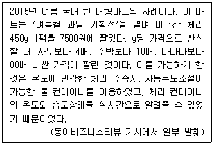
- 사물인터넷 서비스
- BYOD(Bring Your Own Device)
- O2O 커머스
- 증강현실
- PayWord
(정답률: 57%)
85. 다음 중 ( )안에 들어갈 용어로 가장 옳은 것은?
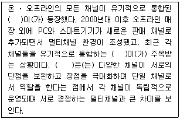
- 비콘
- 옴니채널
- 무인자동체
- 드론
- e-채널
(정답률: 69%)
86. QR코드에 대한 설명으로 가장 옳지 않은 것은?
- QR코드(버전 40 기준)의 최대 표현 용량은 숫자 7,089자, 문자(ASCII) 4,296자, 한자 등 아시아 문자 1,817자 등이다.
- QR코드는 네 모서리 중 세 곳에 위치한 검출 패턴을 이용해서 360도 어느 방향에서든지 데이터를 읽을 수 있다는 장점이 있다.
- 유통, 물류 분야에서 기존 바코드를 대체하는 개념으로 출발한 QR코드는 별도의 리더기 없이 휴대폰을 리더기로 활용할 수 있어, 명함과 같은 개인적인 서비스까지 그 범위가 급속도로 확대되고 있다.
- QR코드는 데이터와 오류 정정 키들이 네 모서리에 각기 분산된 형태로 포함되어 있어 오염되거나 훼손되었을 경우 바코드에 비해 데이터를 읽어들이기 어렵다는 단점이 있다.
- QR코드를 사용하기 어려운 좁은 공간이나 소량의 데이터만 필요로 하는 경우를 위하여 마이크로 QR코드를 Denso Wave에서 정의하고 있다.
(정답률: 63%)
87. 지식의 창조란 암묵지와 형식지의 상호교환과 순환프로세스를 통한 지식의 양적, 질적 발전이라 본다. 이 두 종류의 지식에 대한 설명으로 가장 옳지 않은 것은?
- 철학자 폴라니의 “우리는 우리가 말할 수 있는 것 이상의 것을 알 수 있다”라고 한 말은 암묵지와 더 관련이 깊다.
- 암묵지는 언어나 구조화된 체계를 가지고 존재한다.
- 제품 사양, 문서, 데이터베이스, 매뉴얼, 화학식 등의 공식, 컴퓨터 프로그램 등의 형태로 표현되는 것은 형식지로 분류된다.
- 암묵지는 개인, 집단, 조직의 각 차원에서 개인적 경험이나 이미지, 혹은 숙련된 기능, 조직 문화, 풍토 등의 형태로 나타난다.
- 형식지는 서술하기 쉽고 객관적, 논리적인 디지털 지식 등이 포함된다.
(정답률: 67%)
88. 다음은 학자들마다 어떠한 용어를 정의한 내용이다. ( )안에 들어갈 용어로 가장 옳은 것은?
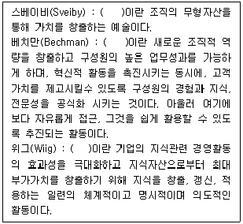
- 핵심역량활동
- 지식자본측정
- 프로세스 경영
- 성과측정
- 지식경영
(정답률: 66%)
89. 웹 사이트를 설계할 때 시각적 측면 고려 요소로 가장 옳지 않은 것은?
- 색상
- 폰트(pont)
- 메뉴(기능)구성
- 레이아웃
- 그래픽
(정답률: 54%)
90. 전자화폐의 종류를 발행 형태에 따라 크게 IC카드형과 네트워크형으로 구분할 경우, IC카드형 전자화폐로 가장 적합한 것은?
- 이캐시(e-Cash)
- 넷빌(NetBill)
- 넷캐시(NetCash)
- 몬덱스(Mondex)
- 사이버캐시(CyberCash)
(정답률: 46%)
D = 1년 동안의 수요량 = 12,000개
S = 주문 비용 = 50,000원
H = 보유 비용 = 20%
따라서, H = 0.2, S = 50,000원, D = 12,000개로 대입하면
EOQ = √[(2 × 50,000원 × 12,000개) / 0.2] = 227.92개
따라서, EOQ 산출값은 소수점 첫째자리에서 내림하여 "약 228개"가 된다.